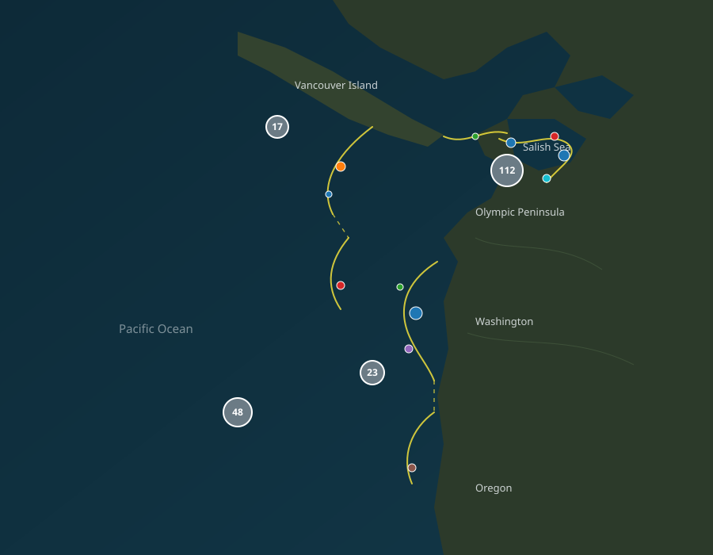

Basemap
Satellite
Map
Ocean
Place Names
Layers
Tracks
Sightings
Group Into Clusters
Tracks in This View
Show Points
Show Timeline Events
Show Direction Arrows
Show Path When There Is No Track
Gap Style
Dashed Line
Faint Line
Nothing
Changes here apply to this view only. Defaults are in
Settings
.
Species
Humpback Whale
Killer Whale
Harbor Porpoise
Gray Whale
Dall's Porpoise
Steller Sea Lion
Harbor Seal
Map picture only. The real map is MapLibre with deck.gl layers.